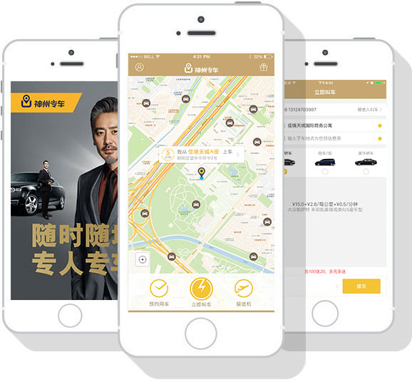

神州专车APP
Shenzhou car
神州专车是国内领先的租车连锁企业神州租车联合第三方公司优车科技推出的互联网出行品牌。2015年1月28日，神州专车在全国60大城市同步上线，利用移动互联网及大数据技术为客户提供“随时随地，专人专车”的全新专车体验。[1-16]
神州专车采用“专业车辆，专业司机”的B2C运营模式，车辆均为来自神州租车的正规租赁车辆，并和专业的驾驶员服务公司合作，再加上百万安全保障，为每位乘客提供安全舒适、便捷、贴心的出行体验。[17]
2015年6月，神州专车邀请吴秀波、海清出任代言人，重磅推出“五星安全计划”，从司机保障、健康保障、技术保障、隐私保障和先赔保障五大方面保障乘车人的安全，全面推动专车市场的安全标准升级。[18]
权威市场调研公司易观国际的最新数据显示，成立仅半年的神州专车以10.7%的专车服务活跃用户覆盖率稳居国内专车市场前三甲，用户留存率达66.7%，高居行业首位，备受中高端客户青睐。
2015年7月和9月，神州专车完成了A、B两轮共8亿美元融资，创造了国内互联网公司前两轮融资额的最高纪录。[2-15] 2015年10月神州专车与e代驾举行战略合作发布会。
2016年7月22日，神州专车主体公司——神州优车挂牌新三板，股票代码838006，成为全球专车第一股，新三板实业第一股。[20]